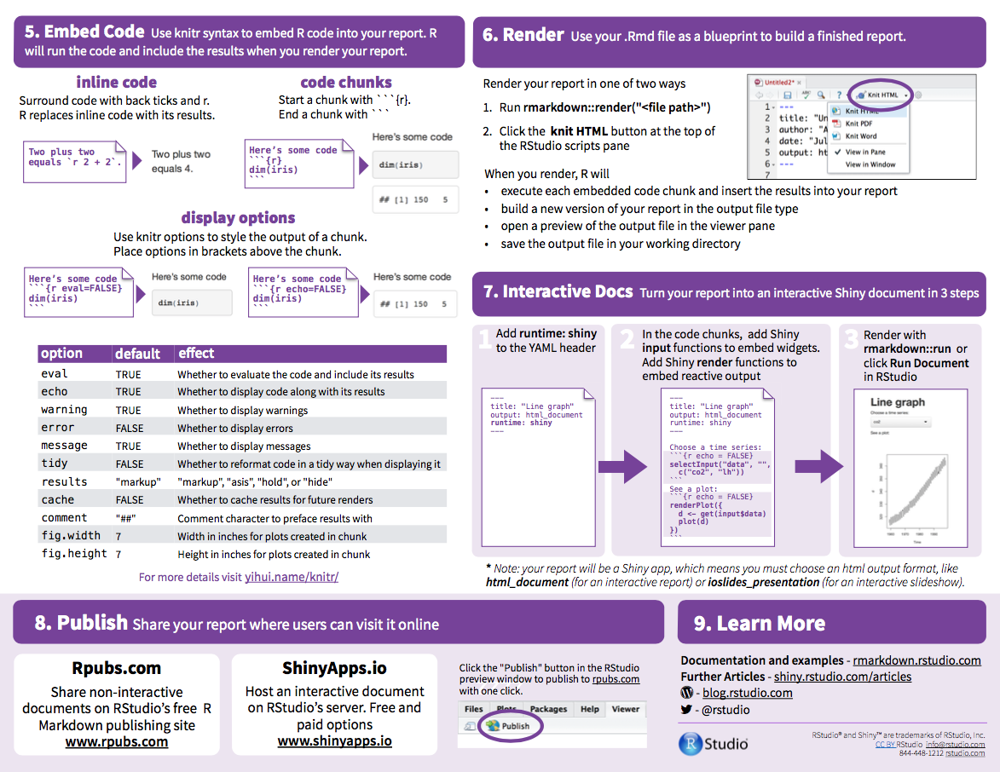

Data Transformation
Download the HW1 skeleton files. To successfully complete the first assignment you will have to do the following:
- Create a new project with the name
homework1.Rproj. - Organize the files in the right folders to provide ease of building a final
HW1_report.Rmd=hw1_ex1.Rmd+hw1_ex2.Rmd+hw1_ex3.Rmd. - Following the instructions below, complete missing code in chunks in
hw1_ex1.Rmd,hw1_ex2.Rmdandhw1_ex3.Rmd.
To obtain the maximum number of points, use whenever possible:
- the pipeline symbol
%>%, dplyrverbs (see below),kableto print tables,ggplotto produce the figures.
| verb | description |
| :— | :— | :—: |
| select() | select columns |
| filter() | filter rows |
| arrange() | re-order or arrange rows |
| mutate() | create new columns |
| summarise() | summarise values |
| group_by() | group operations |
Revise writing report using RMarkdown


Data transformation hands-on
Once you’re environment is set up, you’re ready to get your hands dirty with some data manipulation. Following the instructions provided in “R workflow and RMarkdown”, you should be able to solve the following assignments:
- Exercise 1: Setup
- Exercise 2: Motor Trend Car Road Tests
- Exercise 3: Airquality
Begin by writing your code in the corresponding code chuncks in hw1_ex1.Rmd,
hw1_ex2.Rmd and hw1_ex3.Rmd. When you finish the three exercises, use Knitr to render the
full report HW1_report.Rmd.
Don’t forget to save your files and keep them ready and clean for the next session.
Exercise 1: Setup
Project Setup ‘homework1.Rproj’
Use the files provided in dsfba_homework1.zip to structure your project in the following way (you should create subdirectories by yourselves):

- 1.a Install the tidyverse and knitr.
- 1.b Load the tidyverse, knitr, and set the precision to 2 digits.
Exercise 2
In this exercise, you will use the airquality dataset from the datasets package. The data was extracted from the 1974 Motor Trend US magazine, and comprises fuel consumption and 10 aspects of automobile design and performance for 32 automobiles (1973–74 models).
2.a Load the dataset mtcars. How many observations and variables does this dataset have?
2.b Print out the mtcars data frame sorted by hp (descending oder).
2.c Create a new object named cars_cyl and assign to it the mtcars data frame grouped by the number of cylinders, removing all variables except the average miles per US gallon and gross horsepower for each cylinder group.
2.d Modify cars_cyl to remove all variables except the average miles/(US) gallon and gross horsepower for each cylinder group.
2.e Print out the average miles/(US) gallon and gross horsepower for each cylinder group. What can you conclude about the effect of the number of cylinders on the other two variables?
2.f Improve the summary statistics by also displaying the median, the minimum, the maximum, the standard deviation and the count.
2.g Modify cars_cyl by adding a new variable called perf = hp/mpg and another
variable rank indicating the rank of the cars in terms of performance (the higher the better).
Print out the resulting table by decreasing performance.
2.h Print out (2 digits of precision) the average performance for each number of cylinders. What can you say about the relationship between the two variables?
2.j Using the full dataset, plot the relationship between the weight and miles per US gallon, with a different color for each number of cylinder. What can you conclude about the relationships between the three variables? Bonus: add a (linear) regression line for each group.
2.k Save cars_cyl as a .csv into the results subdirectory in your project.
Exercise 3
In this exercise, you will use the airquality dataset from the datasets package.
This dataset contains information about air quality measurements in New York between May 1973 and September 1973. A preview of the dataset:
data(airquality)
head(airquality)## Ozone Solar.R Wind Temp Month Day
## 1 41 190 7.4 67 5 1
## 2 36 118 8.0 72 5 2
## 3 12 149 12.6 74 5 3
## 4 18 313 11.5 62 5 4
## 5 NA NA 14.3 56 5 5
## 6 28 NA 14.9 66 5 63.a Transform the temperature from degrees Farhenheit to degrees Celsius.
3.b For how many days has the temperature been higher than 30 degrees?
3.c How many of those days were in July or August?
3.d Display the average monthly temperature.
3.e Display ten randomly selected observations from the dataset. What happens if you execute your code a few times? How can you make sure that each execution returns the exact 10 rows?
3.f Display the number of days in each month.
3.g Display the days where the temperature was lower than 20 degrees with observations * where the ozone measurement is missing are removed, * and arranged in descending order of the Month and ascending order of Day.
3.h Produce monthly boxplots of temperature. More specifically, your figure should contain 5 boxplots (i.e., one for each month), with months as the x-axis and the temperature as the y-axis. What can you say about the monthly temperature evolution?
3.i For the days where such data is available, create a scatter plot of the ozone concentration per month. Add the monthly averages in a different color as well as a line that connects them. What can you say about the relationship between Ozone and Month? Is there any similarity to the pevious plot? Describe the link between temperature, ozone and month.